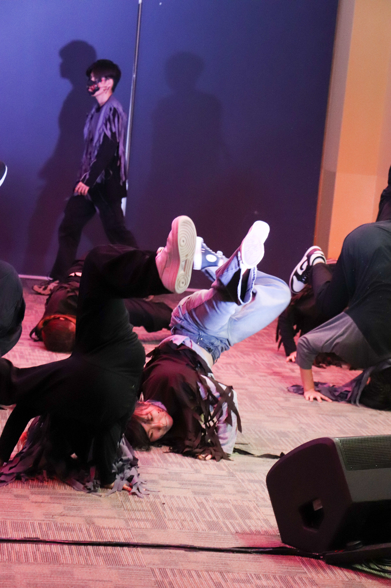

I am Alena Puah, currently studying in the school of Film and Media Studies, pursuing a diploma in Mass Communications. For my media skills, I edit videos for Ngee Ann Poly's breaking club, Mightynomads. I use Adobe Premiere Pro to edit all my videos. I can also use other Adobe software such as After Effects, Photoshop, Illustrator and Audition
My hobbies are dancing! I started off with hiphop and kpop, and now I'm learning breaking and popping! I also occasionally post food reviews on Lemon8 although I took a break. I plan to get back to it soon as i believe it will equip me with content creation skills such as design. In Mightynomads, I have also participated in various events such as Scarefest and NP Open house.
For my leadership roles, I am the Vice President of Mightynomads as well as a publicity member. Along with the club's president, we look after the club and ensure all activities are safe and operational. I do my best to produce videos like Behind-The-Scenes and Tiktok style meme videos! I contribute content ideas to my publicity head and when approved, film and edit them. I have also helped to film for a club videoshoot and edited recaps. I also helped to manage the Mass Communications booth during NP's open house. Not only that, I was a student leader for FMS's Freshmen Orientation Programme. Through these experiences, I learnt how to manage groups of people and stay calm under pressure.

Click below to visit Mightynomads Instagram page!